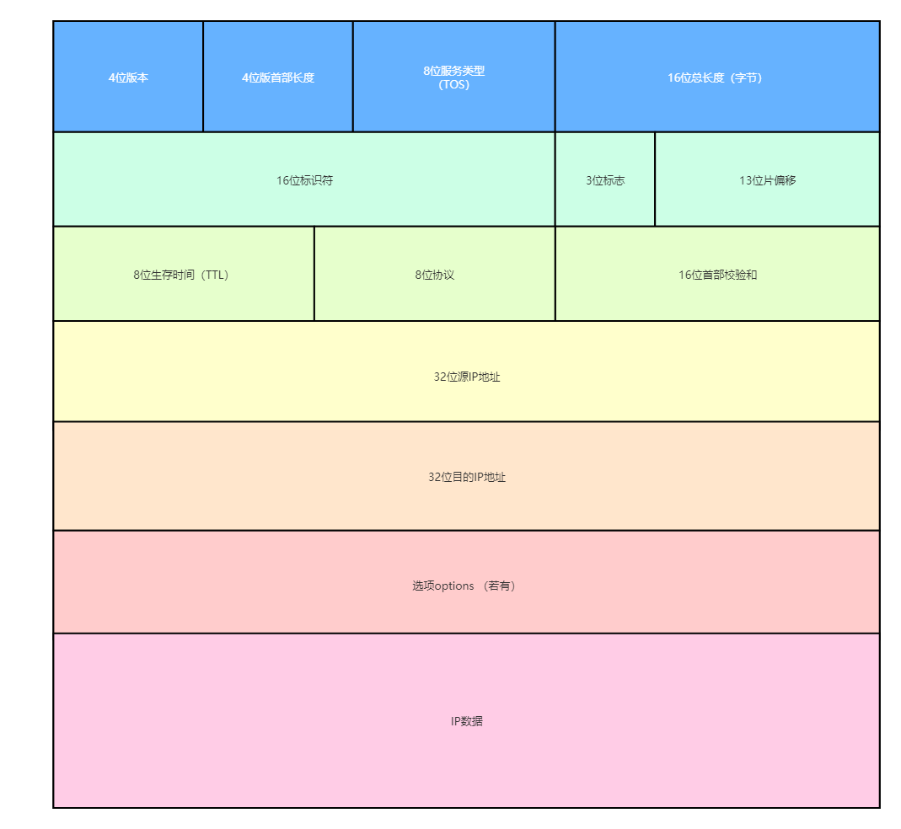

计算机网络学习笔记
概述篇
层次结构设计
OSI七层模型并不是广为流传的标准模型，存在一些不合理性，市场化过程困难重重。 TCP/IP在全球范围成功运行
物理层概述
作用
- 连接不同物理设备
- 传输比特流
信道
- 信道是往一个方向传输信息的媒体，一个通信电路含一个接受信道和一个发送信道
数据链路层
功能
- 数据封装成帧
- 数据透明传输
- 差错监测： 物理层只管传输比特流，无法控制是否出错，需要数据链路层负责监测
差错监测
- 奇偶校验码(有一定局限性)
- 循环冗余校验码 CRC ：根据传输或者保存的数据产生固定位数校验码的方法，通过生成的数字计算出来并且附加得到数据后面来检测数据传输或者保存后可能出现的错误
以太网协议
网络层篇
IP协议
- 解决了虚拟网络中数据报传输路径的问题
- IP头部
协议转发
传输篇
使用端口来标记不同的网络进程
UDP协议详解
- User Datagram Protocol 用户数据协议，是一个简单的协议

TCP协议详解
- Transmission Control Protocal 传输协议控制
特征
- 面向连接的协议
- 点对点通信
- 提供可靠的传输服务
- 提供
全双工的通信 (也就是可以互相同时接/发彼此信息) - 面向字节流的协议
区分
应用层篇
- 本文链接：https://www.wl960127.top/posts/9d1d146e/
- 版权声明：本站内容均为个人学习笔记,不涉及商业用途，仅提供学习参考,第三方摘录已署名链接,未署名请评论添加,转载署名来源即可。
分享